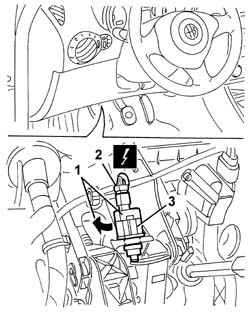
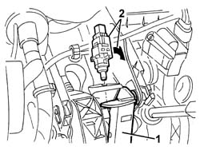

5550D10 brake light switch - r+r
- Path
- Procedures > 55 ELECTRICAL EQUIPMENT > 5550 MANOEUVRING AND WARNING SIGNALS > 5550D brake and reversing lights > 5550D10 brake light switch - r+r
- Kind
- repair procedure (removal / refitting; the operation number is the code)
- Applies to
- engines: 1.6 TS, 2.0 TS; all production periods
- Interactive page
- https://sloeber94.github.io/elrnDB-a147/en/#/3025580
Applies to: engines: 1.6 TS, 2.0 TS; all production periods
 Removing
Removing
 Refitting
Refitting1. Working under the left side of the dashboard cover, rotate the switch in a clockwise direction through around 90 degrees and move it.
2. Disconnect the electrical connections.
 | Name | Connector |
|---|---|---|
2 | Brake pedal switch |
3. Recover the switch.

Applies to: engines: 1.6 TS, 2.0 TS; all production periods
Refitting
Removing1. Keep the brake pedal pressed and fit the switch in the position illustrated.
2. Rotate the switch in an anti-clockwise direction through around 90 degrees until it is properly fitted in the housing.
Release the brake pedal.

Applies to: engines: 1.6 TS, 2.0 TS; all production periods
Check the operation of the brake lights.
Topics linked from this page (1)
Topics that link to this page (9)
- C40 WITH DRIVER'S DOOR OPEN THE GEARBOX DOES NOT SWITCH TO N
- D74 CRUISE CONTROL SYSTEM DOES NOT GO OFF WHEN BRAKE PEDAL PRESSED
- I15 (SIDE) BRAKE LIGHTS NOT WORKING
- I16 CENTRE BRAKE LIGHT ("THIRD BRAKE LIGHT") NOT WORKING
- 1060G38 brake pedal switch - r r
- 3330B02 pedal assembly - r r
- 3330B04 PEDALS ASSEMBLY - R.R. on versions with electro-hydraulic selection manual gearbox
- 3330B22 brake pedal - r+r manual gearbox versions
- 3330B24 brake pedal - r r for versions with manual gearbox with hydraulic selection